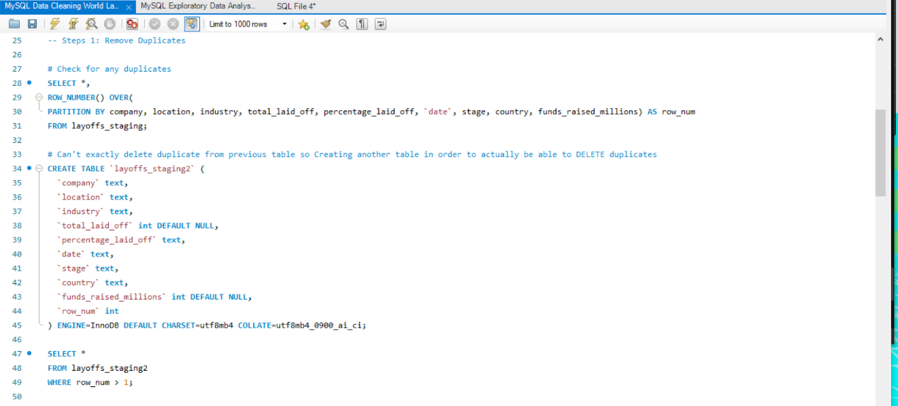
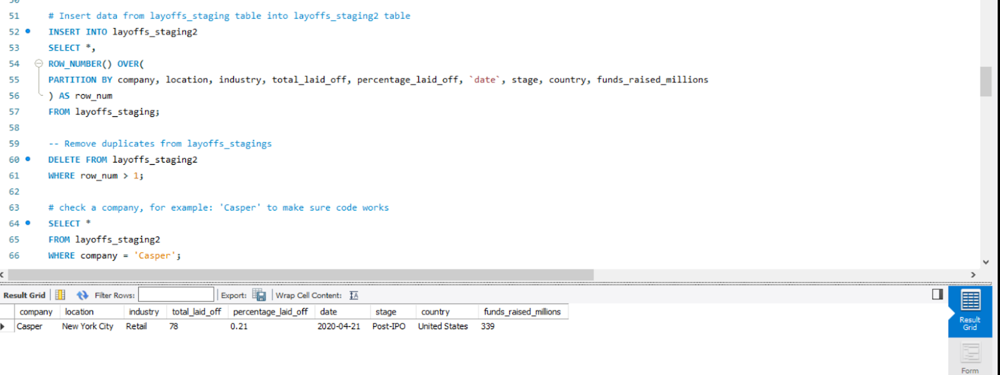
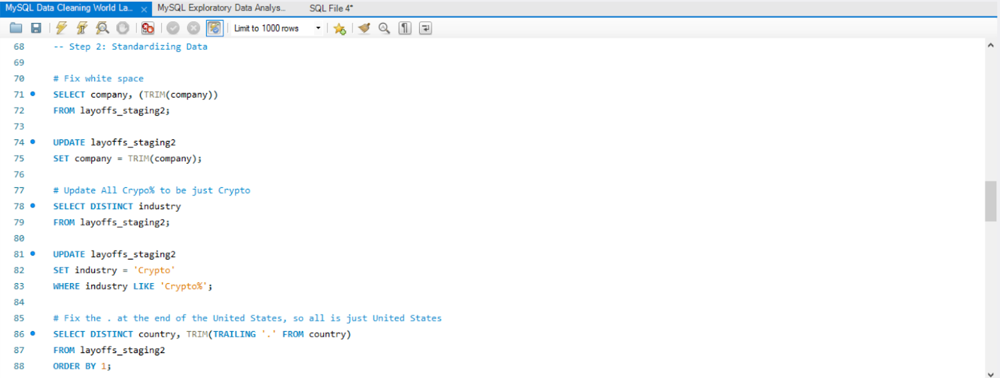
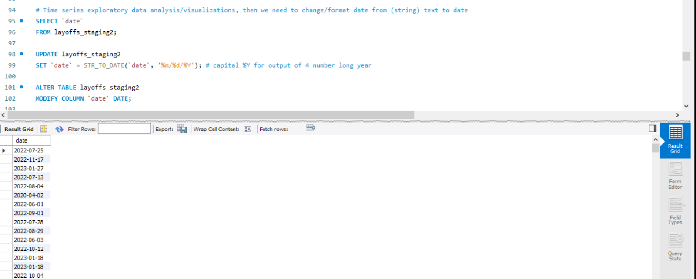
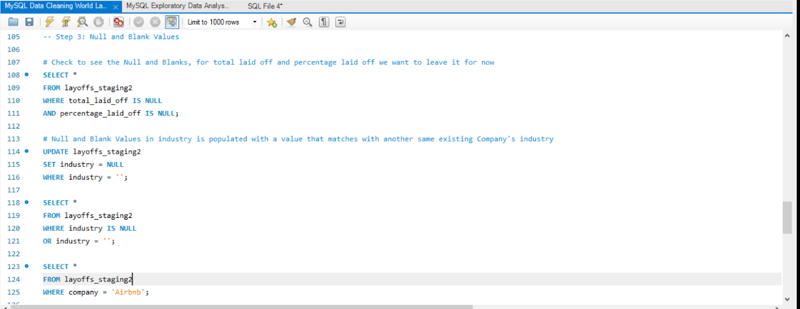
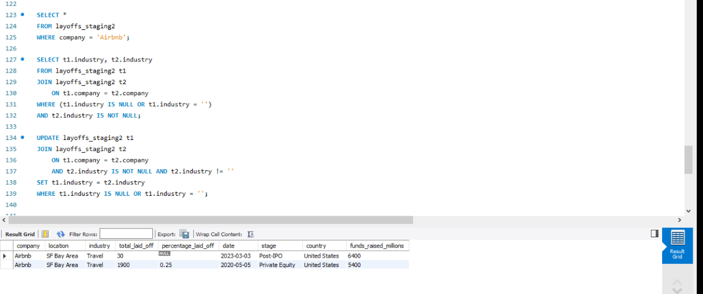
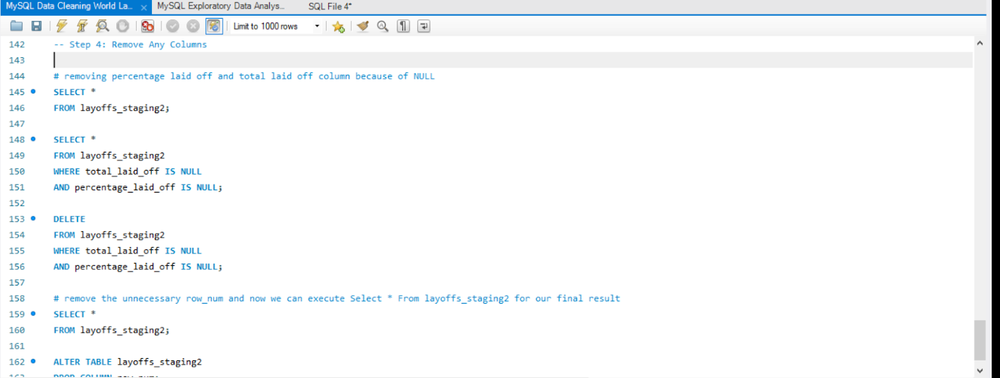
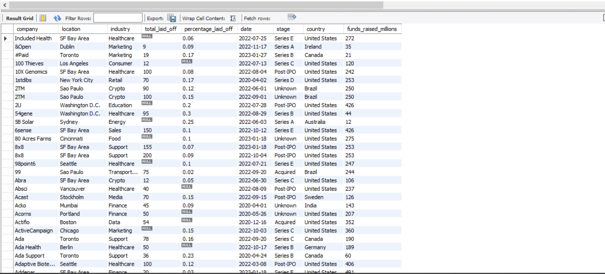

This project includes a MySQL Data Cleaning file and a Layoffs Excel file for data analysis and cleaning. My GitHub page for all of my projects is: https://github.com/nhuxhuynh
I first inserted my excel layoffs.csv and created a different table called "layoffs_staging" for the purpose of not corrupting the original raw data in case we still need it. I did this by inserting all data information from my original layoffs to my layoffs_staging table. I took 4 steps to clean my data, this included:
Step 1: Remove all the duplicates to reduce error and increase reliability and accuracy of the data.
Step 2: Standardizing the data which means I will check for the format and make sure it is consistent with the rest of the data. I removed or fixed any formatting that isn't uniform to encourage consistency and quality that is important for comparison when analyzing the data.
Step 3: Populate or remove any nulls or blank values that are unnecessary and can cause bad data quality. This step is needed to increase data integrity.
Step 4: Remove all unnecessary columns to reduce redundancy and increase efficiency for data analysis.
In this step, I checked for any duplicates by selecting the layoffs_staging table and looking at all the rows of each column. I decided to create another table called "layoffs_staging2" from the "layoffs_staging" table to delete the duplicates and avoid redundancy processes.
I used ROW_NUMBER() and made a new column named "row_num" as well as partitioning each column in my data to list the numbers of duplicates. For example, any row_num listed that is greater than (>) 1 gets removed. I checked to see if my code works by selecting "layoffs_staging" and a random company "Casper." It worked! There's only one result for Casper, so no duplicates!
In Step 2, I standardized the data that I previously saw was not uniform and consistent. This part is important for data integrity and accuracy! I fixed the white space before each company name using TRIM(). I removed typos such as the "%" after the "Crypto" industry and the "." at the end of "United States." Now this makes the data so much more reliable to use!
I made sure to change the formatting of the date so it's uniform to (mm/dd/yyyy).
For Step 3, I checked the columns where I noticed there were Null and Blank values. In the percentage_laid_off and total_laid_off, I didn't remove or populate the null values yet because null is an absence of value; the company didn't provide the #, so it's unknown. I cannot populate a random number or remove it for the consistency of the data without introducing misinformation and altering results for decision-making.
However, I did populate the Null and Blank values in the industry column. I did this by using the same existing company's industry data to populate the same company that has their industry as Null or Blank. I made all Blank values into Null values before populating all Nulls.
In Step 4, I removed the percentage_laid_off and total_laid_off columns because of the Null values. I also removed the row_num column because it was no longer needed for the final result.
This is a view of the final table of layoffs_staging2! The data can be downloaded above or through my GitHub profile: mySQL and layoffs.csv. Thank you for viewing my World Layoffs Data Cleaning Project! :)
